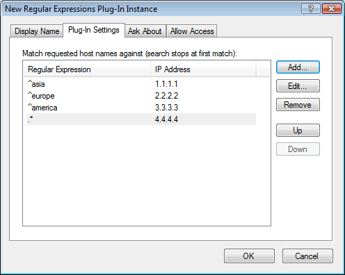

This plug-in uses Regular Expressions (see standard syntax in Wikipedia) to pair host domain names to IP addresses.
This gives you much more flexibility than simple wildcard records.
Here is a simple example:

This will cause requests for anything under "mydomain.com" starting with "asia" to resolve to IP 1.1.1.1.
That would include for example "asia123.mydomain.com".
Requests for "europe..." resolve to 2.2.2.2, requests for "america..." resolve to 3.3.3.3, and anything else under "mydomain.com" resolves to 4.4.4.4.
Regular expressions are compiled when the server modules loads them and therefore run very efficiently in Simple DNS Plus.
NOTE: Keep in mind that the dot (.) character has special meaning in regular expressions (matches any character), so when matching multi-segment domains names, the domain name dots must be enclosed in square brackets [.].
For example to match exactly "something.example.com", the regular expression would be "^something[.]example[.]com$" without the quotes.
The regular expression equivalent to the wildcard record name "*.example.com" is ".*[.]example[.]com$".